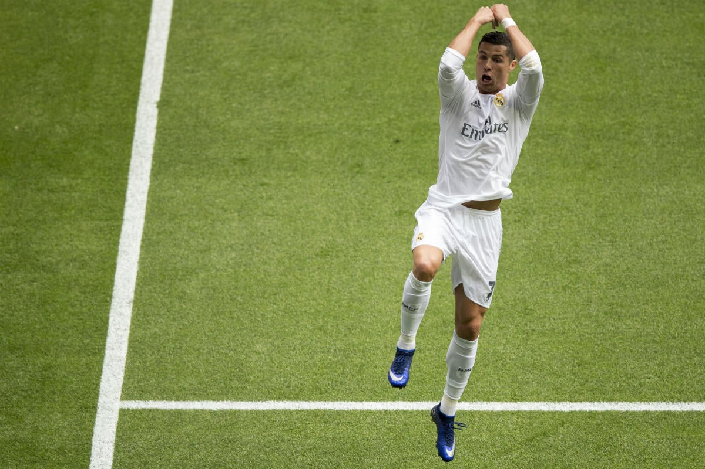

BIENVENIDO
Conoce la historia de uno de los mejores futbolistas de la historia: Cristiano Ronaldo.
BIOGRAFIA

(Cristiano Ronaldo dos Santos Aveiro; Funchal, Madeira, 1985) Futbolista portugués considerado uno de los mejores delanteros del panorama actual. Además de los numerosos títulos y distinciones individuales obtenidos a lo largo de su trayectoria en el Manchester United (2003-2009) y en el Real Madrid (desde 2009), tuvo el honor de ser el futbolista por el que más dinero había pagado nunca un club: en junio de 2009, el traspaso al Real Madrid costó al club blanco 94 millones de euros, hasta ese momento la cifra más alta de la historia.
Cristiano Ronaldo nació en un barrio obrero en la isla portuguesa de Madeira, en el seno de una familia de tres hermanos. Desde muy pequeño mostró sus excepcionales aptitudes para el fútbol: a los ocho años jugaba en el equipo de La Andorinha, y a los diez se lo disputaban ya los dos equipos mayores de la isla, el Marítimo y el Clube Desportivo Nacional; el padre del jugador decidió que ingresara en este último. Allí progresó de forma meteórica, y a los 16 años, tras realizar unas prueba, se incorporó al Sporting de Lisboa y se trasladó a vivir a la capital portuguesa.
LOGROS DESTCADOS
- 🏆 5 veces ganador del Balón de Oro
- ⚽ Máximo goleador histórico del Real Madrid
- 🥇 5 veces campeón de la Champions League
- 🇵🇹 Campeón de la Eurocopa con Portugal en 2016
- 🎯 Más de 920 goles en su carrera profesional
- 🥇 Máximo goleador en la historia de la UEFA Champions League
- 🥇 Campeón de la Liga de Naciones de la UEFA 2019 con Portugal
VIDA PERSONAL

Cristiano Ronaldo es conocido por su dedicación tanto dentro como fuera del campo, incluyendo su vida personal. En una relación con Georgina Rodríguez desde 2016, juntos han formado una familia con cuatro hijos. Fuera del fútbol, Ronaldo tiene pasiones por el fitness, la moda y participar en iniciativas de caridad, reflejando su compromiso con el bienestar personal y el apoyo a los necesitados. Su vida personal, marcada por la felicidad familiar y el compromiso social, muestra una faceta diferente de la superestrella que muchos admiran en el campo.
Cristiano Ronaldo no solo ha logrado un éxito sin precedentes en el campo, sino que también ha construido una marca personal formidable, con un patrimonio neto que supera los $500 millones. A lo largo de los años, ha firmado acuerdos de patrocinio con algunas de las marcas más reconocidas del mundo, incluidas Nike, Herbalife y Tag Heuer. Estos acuerdos, junto con sus propias empresas y inversiones, han contribuido significativamente a su éxito financiero, consolidándolo no solo como una leyenda del deporte, sino también como un ícono global del marketing y la moda.
CLUBES DONDE HA JUGADO
Haz clic en un club para ver más información.